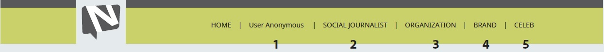
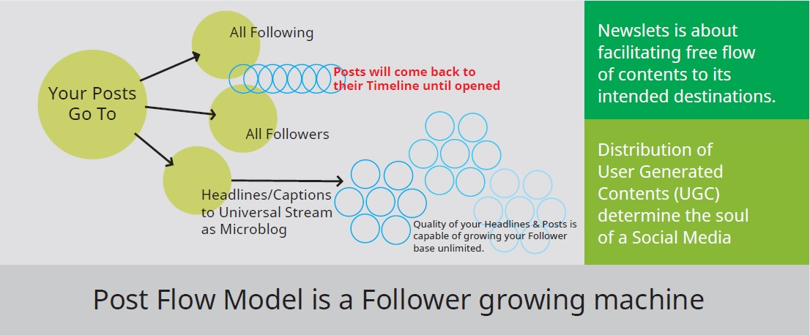

This Terms of Use is an Agreement between You (yourself) and the Platform (site) named and styled as Newslets, Inc registered as S-Corporation in the State of Maryland, USA, and operating under the Domain Name as www.Newslets.com
Once You agree to all Terms & Conditions (here under written in English) for using this Site for a defined purpose at whatever capacity, You accept to become a "User" of this Site/Platform until You deactivate the Account or Newslets Platform deactivates your Account for violating all or any Terms of Use/User Agreement.
Once you decide to become a User of this Site/Platform, You have to go through a process which are mutually beneficial. We (always read as Newslets or Newslets Patform or Platform or Site) urge you to read this Terms of Use in totality before submitting User Application Form so that we (both You and Newslets) are benefited from having a well informed User. We also advise you to read/study about Us so that You do not have any faulty expectations from Us.
Once You are totally satisfied, You have to Click on Sign Up button kept at Landing page. Once navigated, You have to Click on Create Account button. We suggest that at this point You should read "Read Description Here" to find out what type of User you would become. Once You Click on Create Account button, You will be prompted to Select Category of User. You can select only one Category out of Five.
Newslets has segmented (part of our design of the Platform) all Users in to Five (5) Categories. If You do not find yourself fit in any one of these Five Categories, You must not proceed to try to have an Account.
Once you Select appropriate Category, You will be rendered with specific Form specifically designed for that particular Category of users.
Newslets is an equal opportunity Platform. Any user from any Category will enjoy all benefits of its equal treatment disregarding geographical location and or any factor (personal or impersonal) that can cause direct or indirect discrimination. However, there are categorical differences between Users which are category specific which cannot be taken/understood/perceived/mistaken as discriminatory.
As for example, common users under User Anonymous Category will have to act/behave/engage & remain as Anonymous to other Four (4) Categories, commonly coined collectively as Beneficiary Categories.
This specific status of "Anonymous" is user specific, user intrinsic, tactical, and was necessary to the very infrastructure of the Platform design. If You choose to become Anonymous under User Anonymous Category, you accept that You will be "Anonymous" to other category of users except your own class of Users.
Newslets is a Social Marketing Communication (*communication to benefit related others) Platform. Objective of the Platform is to facilitate unrestricted distribution of Posts, Updates and Engagements (Comments / Reviews Relevant / Useful / Liked / Shares etc.) successfully uploaded by any User from any Category.
This distribution aspects of communication is symbolized in the Posts Flow Model of Newslets. It is absolutely fundamental to democratic process and "freedom of speech".
Newslets abandoned monetization (asking for Premium, Ads etc.) form restricting free flow of communication between a User and all Following and all Followers of the User from any Category.
Newslets is designed to establish/augment/facilitate natural, organic inter-communication between Users of own class and across categories.
Submission of Create Account Form via Newslets platform is your Right, but your action is not a guarantee from us for an account with Newslets. We reserve the Rights to verify/deny /keep on hold/ any would be User under any Category for whatsoever reason.
When you are accepted/taken in as an User, you will have the Right/ability to access a Dashboard personalized for you. You have all Rights, such as > make Following move, being Followed, upload posts with texts and visuals, make engagements on posts from your Following and Followers, delete own posts, edit own posts. You have the Rights to make Follow Move whomsoever you think fits within your social, economic, cultural, political, life & lifestyle objectives. You have the Rights to receive engagements from your Following and Followers via your Posts which will be recorded/notified/added to aggregation of Points. Newslets has Rights to determine/arrive at your aggregated points. Newslets may change value of points, change quantity of points as part of operational exercise concerning metrics of Analytics.
As your Right to shape your own social destiny as an User, you can even break Quota Limit of Following (our Right by Design) by accepting Minus Points imposed by the Platform at recurring 30 days count (meaning minus points will be added to You every 30 days as long as You continue keep breaking the Quota Limit). Quota Limit is a part of design (thereby infrastructural) to contain indiscriminate Following.
You have the Right to be Followed by unlimited users without any hindrance or charge or favor. There will be no imposition of Quota Limit from the Platform (our Right by Design). You have the Rights to initiative deliberate actions to increase your Followers baseline.
But You give away/loose your Right to continue with Your Account if You keep your Account inactive for consecutive 90 days. Inactive means no post made, no engagement made from your Account during those 90 Days. Any engagements received (actions made by others) on your post(s) made earlier will not count as Your Actions.
You have the Right to Report on spam, abuse, obscene, dislikes uploaded/posted by any of your Following and Followers.
You can always report on Platform Bugs. You have the Right to Seek Help on any issue regarding/involving your account. You can contact us via "Solve Your Problem" window kept at the footer of landing page. But we reserve the Right to solve, or not solve, or ignore all together. You have no Right on our action(s). However it goes to our benefit(s) if we solve all user(s) problem(s) promptly.
Social Journalist is a quasi-privileged Category. We may accept someone for the time being pending his/her Final Acceptance. The period of "pending" will be Unlimited on our part. Platform will try to upgrade a user's journalistic knowledge and feelings to turn someone in to a good social journalist.
Social Journalist can also be subject to situation beyond his/her or our control. In those extreme situations where Social Journalist feels safety and security of life at danger, Social Journalist has the Right to ask for Anonymous Status. Newslets must comply with any such request
The user has no Right to remain inactive for an unacceptable longer period otherwise deemed non-professional. News is a regular need thereby has to be fed regularly. Impact of non-availability goes beyond the personal failure. Although the User is voluntary in nature, inaction or inactive nature of performance will potentially damage personal Trust with the Following and Followers, thereby also loose Trust on the Platform. In this type of situation, Newslets will deploy/accept replacement CJ for that location.
Social Journalist reserves Proprietory Rights on his/her News/Report(s) in perpetuity.
However, Social journalist grants Unlimited License to Newslets/Platform/Site at the same time he/she uses the platform to Publish in exchange for one time 100% organic reach to his/her all Following and Followers, This will be considered as "fully paid content" in exchange of our "exclusive distribution service".
Social Journalist will have no Right to Open or to Have multiple Accounts representing multiple locations.
Any user under Organization Category may have multiple Authorized Users of the same account to discharge organizational responsibilities. This is to overcome geographical barriers in "service delivery".
Newslets communication model supports local, location based communication with people. it s mandated to serve. However, users under Organization Category may seek Help from us via "Solve My Problem" window should they have any problem in opening multiple accounts through specific Form. Rapid Response Team for Organization Category will come back to you with solutions. Government, Multinational and National NGOs, UN and such similar bodies which have multiple mandated jurisdictions are eligible for this special treatment.
Member of Parliament, Mayor, Senators, Representative, Councillor, Commissioner, such mandated persons are treated as Organizations. But they are not allowed to have Multiple Accounts. Each one is bound by only one jurisdiction and constituency, hence One Account.
Brand is a conceptual category at Newslets Platform. It is the communication process that dictates Branding of a business. Size of the business, large or small, single person, or any entity will not constitute Brand Category. It is what what you do rather what size you are.
In cases of large businesses with multiple outlets/francise will be eligible for multiple accounts but as local units. Same brand name will have to go by local location name attached to it. So it means that each business entity has to serve local customers', be a Brand with local people.
Newslets is designed to support "person as business". Those persons whose expertise can be shaped as product(s) will be allowed to have account under Brand Category. Freelancers, Professionals, Consultants, Service Providers can have "single account" in Personal Name. They will operate as similar to an eCommerce entity.
Newslets defined Celeb Category as "celebration of life with person(s) you can see from near, talk to, reach to, relate to, be reciprocated for appreciations and supports at personal level". Our Celebs are never far away Stars, only to be seen through electronic and social media. Our celebs are just local Celebs. local budding soccer star. local up-coming cricketer, local poet, local storyteller. Our Celeb will become star in future. This aspect of Celeb Category is aligned with Newslets's communication model that supports local relations build up and maintenance thereof for everything.
Anyone who is considered a Celeb by a sizable supporters is a Celeb. But acceptance of Celeb Role comes with deep understanding and discharging responsibilities of being a Celeb. Eligible Celeb must have confidence that at least 20/30 people will follow him/her from the local area in Anonymous. You have no Right to ask for removal of "Anonymous Status" of your Followers even though you may know them personally. You will have no Right to initiate investigations on anyone who offered any negative comment on your performance as Celeb.
Celeb Category is a Beneficiary Category at Newslets. You receive supports, inspirations, compliments, goodwill of the people of your local area. Your supporters will be more open, more authentic in support, much truthful in commenting, much happier on your progress if they are Anonymous. You will benefit more from their collective judgement. You will have more scopes for making improvements.
If you decide to be a User under User Category, you accept without any reservation that you will be kept "Anonymous" by the Platform (the design of Newslets itself) with all of your Following (those you had decided to follow) from Beneficiary Categories. They are users from Citizen Journalists, Organizations, Brands, Celebs categories. Between a User of User Category and user(s) of Beneficiary Categories, communication model will be 1-way in nature.
You also accept that no user from Beneficiary Categories will ever be able to follow You unless Newslets changes its design on its own accord. You have no Right over Platform's design, planning, arrangement, user experience, user expectations. You accept to use your account "as is basis" and will use it as Anonymous.
You also accept that You will Not Be Anonymous with other Users who belongs to your own class. Between Users of same class, communication will be of 2-way nature with Recognition established. Any post, update, engagement that You make from your account will also be Recognized as done/published by You.
You also accept that Platform will create a parallel ID (Numerical ID corresponding to Alphabetical ID) side by side of your representative ID (Alphabetical ID corresponding to Alphabetical ID) which will act as your Username. Username once created will be Fixed in nature. You will not be able to or you do not have any Right to change Username until unless Platform exhausts internal process. Username will tie up with a Password which can be changed via a Link whenever you need to.
While attempting to secure or have an account for yourself, or for your business, or for organization, you agree/accept that you will not generate and upload contents in contrary to the general nature of the Category.
That you accept your age is minimum 16+ at the time of attempting for an account with Newslets.
That you will not share your Password with any other person for whatsoever reason. However if you need someone else also operate on your account for any purpose, you may avail "Authorized user" via our Link for that person. In that case, you are responsible for the safety and security of use by Authorized User. Any "delete" "edit" "engagement" by authorized person would be deemed as done by yourself.
That you are obligated at all time to keep your "comment(s)" socially acceptable, decent, civic, non-abusive. You are obligated not to upload spam like contents, phishing like contents. You are obligated not to upload any content that violated copyrights. Your contents must not originate through plagarism.
That you as User under any category, is duly obliged, not to publish/upload any material(s) or content(s) that are offending/derogatory/unethical/obscene/unacceptable to any or a sum-total of Users under your own Following & Followers and all Users of this Platform.
Newslets will abide by its promoted Posts Flow Model which guarantees unrestricted flow of your "generated contents" to all of your Following and all of your Followers. Headline(s) of your posts will flow to Universal Stream One Time as a part of Posts Flow Model.
Newslets will remain obligated to uphold all terms and conditions stated/implied herein this Terms of Use at all time and also as written in Privacy Policy.
Newslets will keep an User Anonymous Category User as "Anonymous" to Beneficiary Categories. Identity of a User will never be disclosed to them unless otherwise be Warranted and required by the Law having rightful jurisdiction over the User.
Newslets is not obliged to keep/store/archive any or all of your contents/posts/uploads for the time being or in perpetuity. You indemnify/exempt/relinquish/exonerate Newslets from any such obligation(s) under any circumstances may arise, seen/unseen/perceived/contextual in nature. You authorize Newslets to remove/delete any or all of your posts/contents/uploads without providing you any notice/alert/warning.
You and Newslets Platform, both of us reserve Rights to Termination of this Agreement with Prior Notice to each other.
Newslets is obligated to keep Deactivate Your Account process active at all time so that You may deactivate your Account yourself as a result of Termination of Agreement. You may also send us a Note via Resolve My Problem window kept at the footer of Landing Page to send us a Notice. We will send our Notice to You only to your Email ID which you identified as Primary Email ID to reach you.
However, Termination of this Agreement will not guarantee inactivation of your content(s) from the share/archive of the User(s) you yourself engaged/shared earlier over the period of your uses of our Services (technology based distribution/dissemination).
Termination of this Agreement will not separate us in perpetuity. You may approach Newslets Platform and vice versa, (we approach each other), for a new Terms of Agreement.
As a User under this Terms of Use, it is generally expected of You that as an User of this Platform You will proactively "Do" certain things which are required from all Users.
> Provide accurate information in the the fields of Create Account Form.
> Provide verifiable information in the fields of Create Account Form.
> Comply with any and all Law pertaining to writing, copy, print, publications, share, archive.
> That You will proactively comply with all laws that govern Privacy Laws, Property Laws, Intellectual Proprietory Laws, Anti-Spam Laws, and any other regulatory requirements that law dictates abundantly.
> That You act as responsible, acceptable, respectable in the Social Environment of Newslets.
As a User under this Terms of Use, it is generally expected of You that as an User of this Platform You will proactively "Don't Do" certain things which are required from all Users.
> Provide inaccurate information willfully in the fields of Create Account Form with intention to create Fake account(s) for the purpose of future gains.
> Use Post Upload Form(s) entirely or partially for any other purposes other than publishing contents only deemed as appropriate for the type of User you are.
> Create a mirror or false or misleading identity which do not match with real-life situations.
> Use the publishing and distribution power of the Platform as weapon of malice/hate/anger, or propagate bias/propaganda harmful to beliefs/faiths/cultures/traditions.
> Use the publishing and distribution power of the platform to publish "advertisement" "look alike advertisement materials" for the purpose of monetary gains. sale, benefits other than pecuniary.
> Block rightful advertisement from views that will come your way, on the pages you will read, browse, scan, stare.
> Use the "Anonymous" nature of User capacity as a weapon for libel, abuse, harassment, stall, lie, use discriminatory remarks, produce bogus review(s) to inflict damage, decampaign, discredit, create social/tribal/communal/regional confusions.
> Disclose confidential information that do not belong to you and as a result other(s) are hurt or damaged irreparably.
> Intentionally or unintentionally violate propreitory or intellectual rights that lawfully belong to Other(s). These rights are usually covered under/by Patents, Trademarks, Copyright Acts, or governed by any other appropriate proprietory rights laws.
> Intentional or unintentional misrepresentations of professional qualities/attributes when act as Freelancers or Professionals under Brand and Celeb categories.
Registered Office : Newslets,Inc
1007 Leslie Avenue Catonsville MD 21228 USA